|
.
| Perfect
Dark Version Beta : Gadgets |
Tester - Datathief - Bug
|
| Perfect
Dark Version Beta : Gadgets |
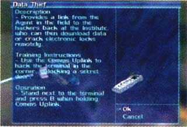
Tester,
Datathief, et Bug ! Le Bug est la Mine ECM, et le Datathief, le Recepteur
(ou Data Uplink en VO). Le Testeur est surement le Scanner (voir plus
bas). Notez que l'on trouve dans Goldeneye un Datathief (Bunker 2).
Code
de Wreck7 : Remplace certaines Armes du Temple en Testeur ! |
801DC62C
0033
801DC7E4 0033
801DC99C 0033
801DCB54 0033
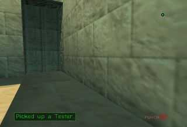 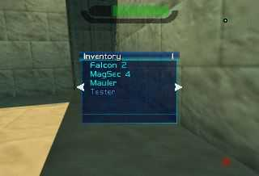 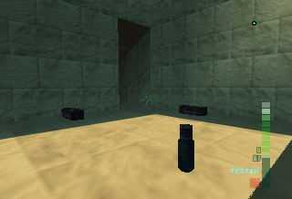 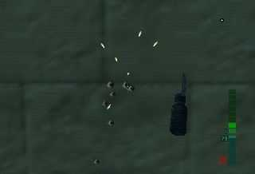
Ci-dessous,
la "Night Vision" se nomme ici "Night Sight". 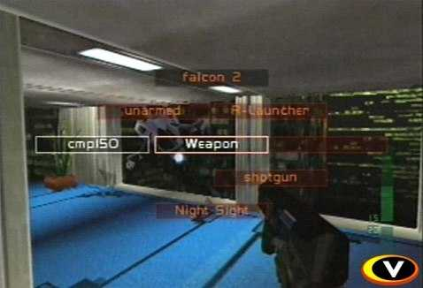
Scanner Infra-Rouges
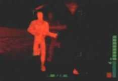 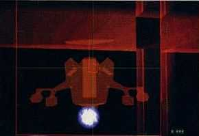
Pas de "Jumelles" par dessus l'ecran, mais une vue à la Rayons-X ou Farsight XR-20.
Data Thief

C'est tout simplemment l'Ancien Nom du Data Uplink (Recepteur en VF).
Cam Spy
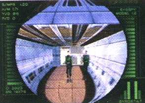
Le Nom est différent : Eyespy !
Combat Boost
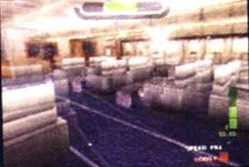
Le Nom est "Speed Pill" (Pillule de Vitesse) et la 1ère Fonction est "Boost".
Chrono
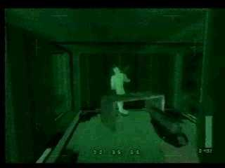
Comme vous le voyez, il n'était pas tout à fait au meme endroit sur l'Ecran.
Scanner
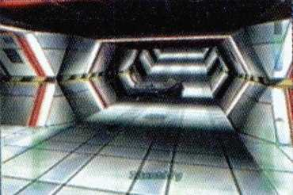 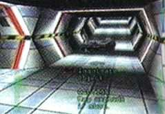
Le Magazine N64 Magazine nous dit que c'est un Objet capable de reveler l'utilité d'une Chose. Ici, à propos d'Elvis, le Scanner nous dit "Objet innanimé - Attention - Peut Exploser si on tire dessus". Rien de bien génial, et donc l'objet fut viré. Dans la 1ère Mission à la limite, l'Objet nous aurait dit ou exploser le Tuyau pour trouver le Fromage (voir Section Fromage - Datadyne Defection). |
Objets - Decors inutilisés dans le Jeu
Quand vous entrez ces Codes allez dans Felicity juste à coté des Toilettes en haut et vous trouverez ces Trucs marrants... Ci-dessuos un Ordinateur de Goldeneye !! |
811EED4C-0018
811EEDF4-0018
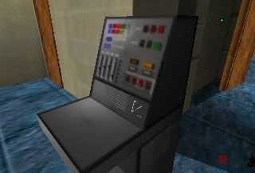
Ci-dessous un Coffre à la Zelda...
811EED4C-0018
811EEDF4-0018
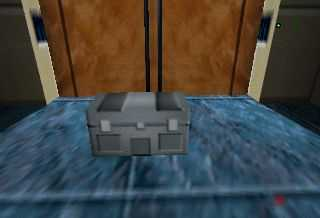
Des Boucliers Beta ! Sur la Photo de gauche, il gicle du Garde (comme dans le Vrai Jeu . Sur la Photo de Droite, un Bouclier ressemblant à ceux de Goldeneye. En plus au niveau Scenario c'est crédible, les Shield que l'on connait n'étant qu'en construction dans la Mission suivante ! |
811EED4C-0182
811EEDF4-0182
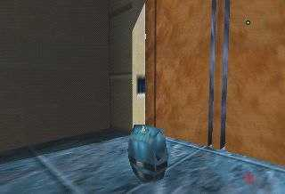
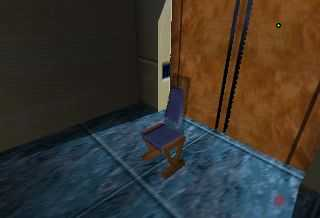
Une
Chaise, probablemment de chez Datadyne !
811EED4C-0172
811EEDF4-0172